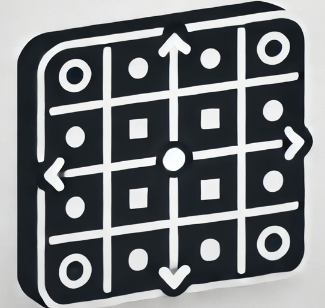
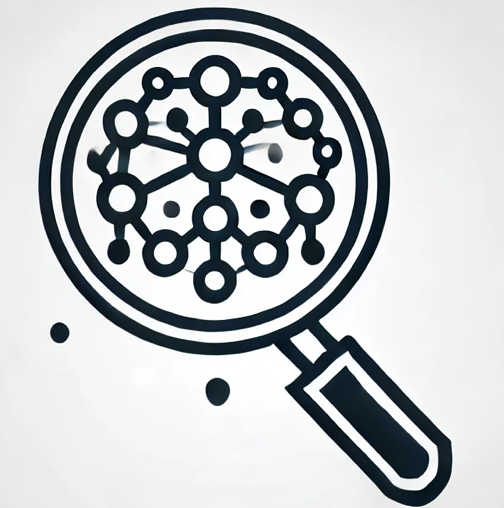

Onderzoekstools
Hier vind je de belangrijkste onderzoeksmethoden en analysetools die gebruikt zijn in dit onderzoek. Klik op een tool voor meer informatie.

Decision Matrix (Inclusief Triple C Vragenlijst)
Een gestructureerde manier om beslissingen te nemen, waarbij input van collega's via de Triple C vragenlijst wordt meegenomen.
Meer Informatie

Thematische Analyse
Analyseer teksten en ontdek patronen en thema's in kwalitatieve data.
Meer InformatieInterviews
Een kwalitatieve onderzoeksmethode om diepgaande inzichten te verkrijgen.
Meer InformatieAI-geïntegreerde Data Analyse
Een AI-gestuurde tool die helpt bij het verwerken en analyseren van grote datasets.
Meer Informatie